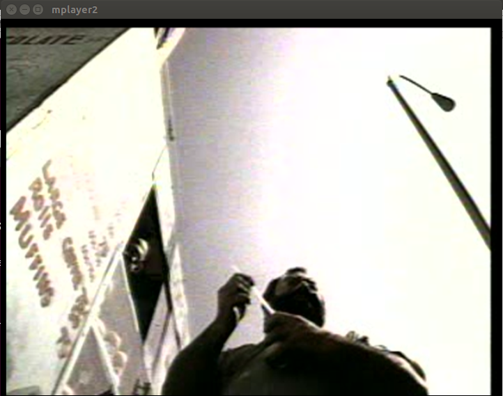
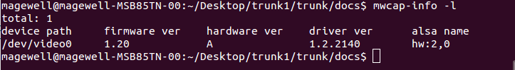
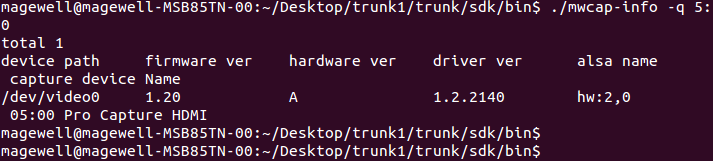
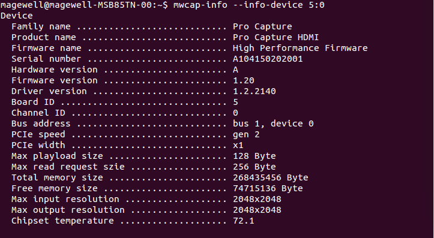
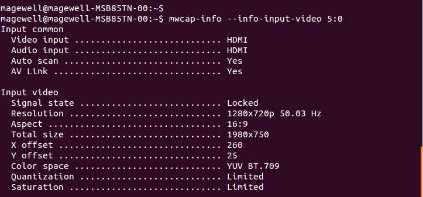
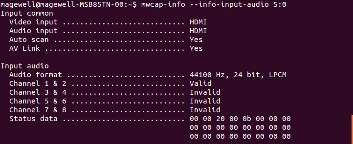
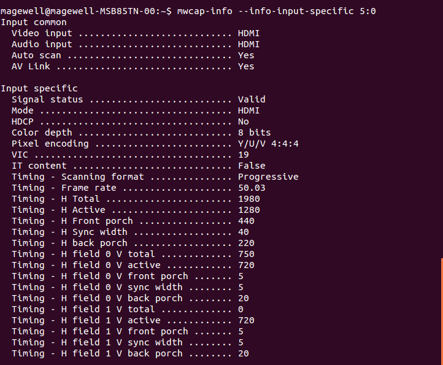

If dirver works correctly, it will be able to display video and audio images normally.

4 ToolKit software
This section mainly introduces how to use the common software on Linux.
Pro Capture Series Card adopts modular design and all the capture channel on the card can be seen as an independent video capture device
In this article, “Video Capture Devce” indicates a capture channel on the card, “Video Capture Card” indicates the whole card.
A video capture device has two kinds of representation methods
1 Using a v4l2 device file name represents a video capture device(eg. /dev/video0)
2 Using device ID(Board-ID:Channel-ID, eg. 0:0) represents a video capture device. Board-ID represents the num of the dial
switch on the video capture card, Channel-ID represents the index of the device on the card. If the two video capture cards
have same dial switch num, the video capture device not the only one.
4.1 mwcap-info
mwcap-info is a commond line tool on Linux. It can get all Pro Capture series devices on the current PC and the infomation
about the hardware, input source, hdmi frames and file name of the device.
mwcap-info has the following commond line parameters：
NAME
ANNOTATION
-h
Show help message.
-l
List all video capture devices.
-q
This parameter represents video capture device，list the information of the specified device.
-i or --info-all
This parameter represents video capture device， list all the attribute information of the specified device, include input source, hardware, and hdmi frames.
--info-device
This parameter represents video capture device， list hardware information of the specified device.
--info-input-all
This parameter represents video capture device， list input source information of the specified device.
--info-input-video
This parameter represents video capture device， list video input source information of the specified device.
--info-input-audio
This parameter represents video capture device， list audio input source information of the specified device.
--info-input-specific
This parameter represents video capture device， lsit information related to interface of the specified device.
-v
This parameter represents a device ID， list the v4l2 file name of the device, the option can be used in the script.
-a or --alsa-name
This parameter represents video capture device， list the alsa file name of the device, the option can be used in the script.
--alsa-name-mplayer
This parameter represents video capture device， list the alsa file name of the device which format is mplayer, the option can be used in the script.
--alsa-name-pa
This parameter represents video capture device， list the Paulse Audio file name of the device, the option can be used in the script.
-c
This parameter represents a device ID, list the num of the device which have the ID, the option can be used in the script.
Example：
list all the video capture devices information.
$ mwcap-info -l

list the information of the specified video capture device.
$ mwcap-info -q /dev/video0
-- or --
$ mwcap-info -q 0:0

list the attribute information of the specified device, include input source, hardware.
$ mwcap-info -i /dev/video0
-- or --
$ mwcap-info --info-all 0:0
list the hardware information of the specified device.
$ mwcap-info --info-device /dev/video0
-- or --
$ mwcap-info --info-device 0:0

list all the input source information.
$ mwcap-info --info-input-all /dev/video0
-- or --
$ mwcap-info --info-input-all 0:0
list the video input source information.
$ mwcap-info --info-input-video /dev/video
-- or --
$ mwcap-info --info-input-video 0:0

list the audio input source information.
$ mwcap-info --info-input-audio /dev/video0
-- or --
$ mwcap-info --info-input-audio 0:0

list input source information related to interface.
$ mwcap-info --info-input-specific /dev/video0
-- or --
$ mwcap-info --info-input-specific 0:0

list v4l2 file name of the specified device, this option can be used in the script.